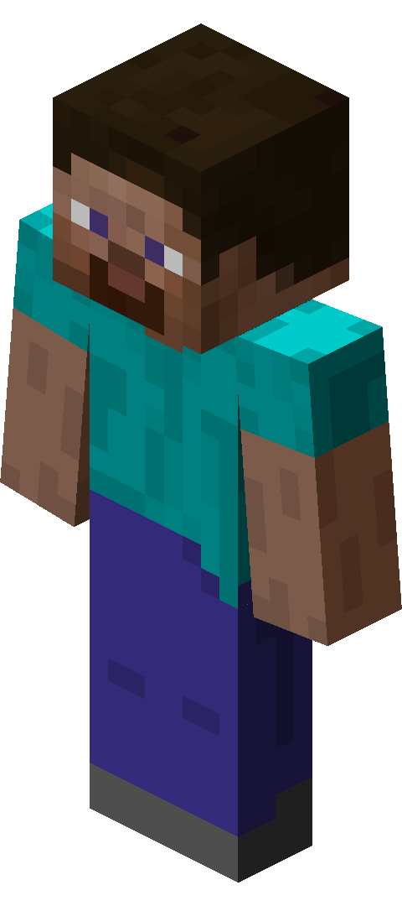
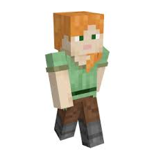
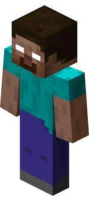

|  | SteveSteve is a fictional character from the Minecraft video game franchise. Created by Swedish video game developer Markus "Notch" Persson and introduced in the initial Java-based version of Minecraft which was publicly released on May 17, 2009, Steve is one of two default player character skins available for players of contemporary versions of Minecraft. Steve lacks an official backstory by the developers of Minecraft as he is intended to be a customizable player avatar as opposed to being a predefined character. His feminine counterpart, Alex, was first introduced in August 2014 for PC versions of Minecraft. Depending on the version of Minecraft, players have a chance of spawning as either Steve or Alex when starting a new game. |
|  | AlexAlex is a feminine character with bright orange hair hanging to the left side, pale white skin, and white eyes with green pupils, with a light-green shirt (un-tucked on the right side, and a dark green belt wrapped around it), a pair of brown pants, and grayish boots. Alex appears to have pinkish lips and has thinner arms than Steve. Alex's design shares similarities to lead designer Jens Bergensten. They are often referred to as the "slim" skin on various websites such as "The Skindex.". |
|  | HerobrineHerobrine ( /ˈhɛroʊˌbraɪn/ HEH-roh-bryn) is the subject of a community-made creepypasta. He is one of the major community icons of Minecraft, yet Herobrine has not been present in any version of Minecraft. |